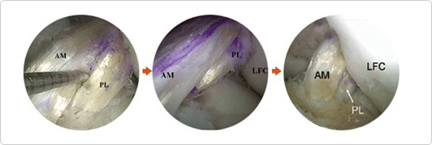
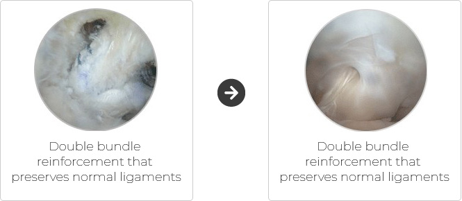
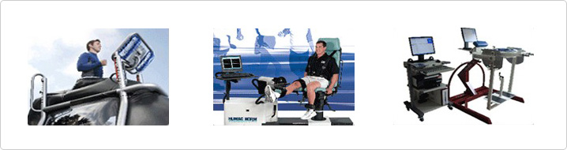
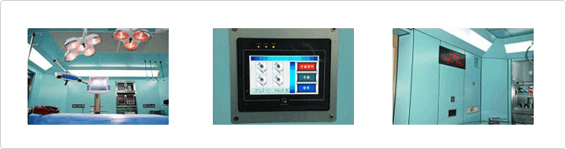

本院的前后十字韧带损伤时的再建术
双重多发前十字韧带再建术
- 在股骨上穿两个孔，两个筋穿过孔之后，成功地再建前十字韧带
- 前十字韧带破裂时，到目前为止一直施行重建几条韧带中比较重要的前内侧分支的单一单发再建术，而本院施行着在国外也不常见的多重多发再建术。

双重多发后十字韧带增强术
- 实行利用关节内窥镜的后十字韧带的双重多发增强术
- 后十字韧带与前十字韧带不同，在韧带组织中有丰富的血流，可再生的组织很多，而且还分布着膝关节的功能性神经组织，从而做保存正常组织的手术对患者有利，但是手术难度高，需要高超的手术技术，所以很多时候都是在去除正常组织后再做重建手术。

从住院到手术后恢复的一条龙恢复系统
-
专业恢复治疗师一同参与手术后康复项目中，在一般的物理治疗恢复方法中引进了帮助恢复正常生活的运动恢复系统，恢复手术后减弱的肌肉功能、使住院患者快速恢复正常的日常生活。

所有手术室都为无菌系统清洁室
-
比起治疗方法，往往因为开刀引起的再次感染，手术出现很多不理想的结果。本院所有的手术室都保持着无菌/清洁状态，可100%防止病菌的侵入。
